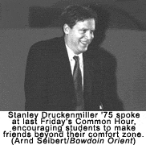
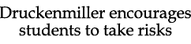
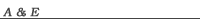

|

Jane
Hummer
Staff Writer Investment banker and familiar Bowdoin alumnus Stanley Druckenmiller ’75 spoke to a large crowd in Morrell Lounge at last Friday’s Common Hour. His speech started with a brief history of how he ended up at Bowdoin and his first impressions of the College. Unlike most of his classmates at a private high school in Virginia, Druckenmiller chose to look beyond the University of Virginia, and decided to attend Bowdoin on the advice of an English teacher. He described his arrival at Bowdoin as a “profound culture shock” to a self-proclaimed “hick from Virginia.” He emphasized the benefits he gained from learning to take risks while at Bowdoin. “The key to my Bowdoin experience was I ventured outside my comfort zone in both the curriculum as well as the personal.” |
|||
| Go to the Article | |||

US
continues to focus
on Florida
Read
more...
Penny
wars winner
still undecided
Read
more...

The
Visit: Tragedy, romance,
and grotesque comedy
Read
more...
The
problem is not the
Electoral College
Read
more...
Bad
News Bears:
Football goes 0-8
Read
more...
What's happening this week
Read
more...